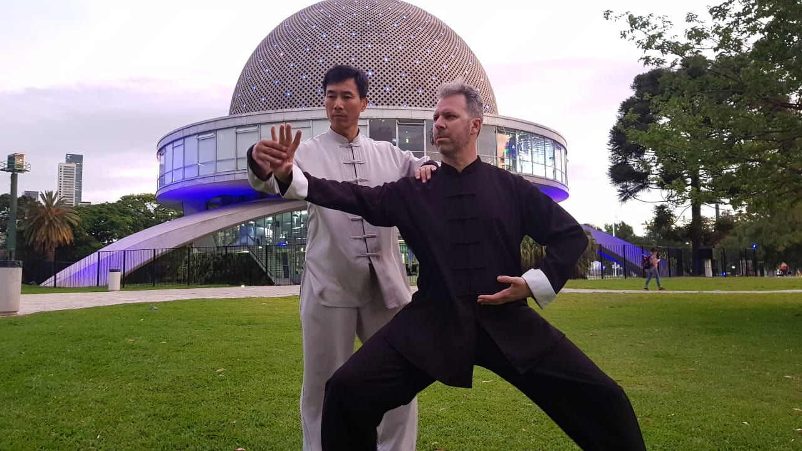
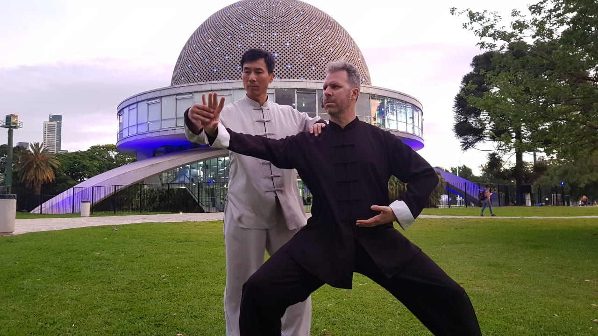

Chen Taiji
Chen Bing Taiji Academy (陳炳 太極 院, Chén Bǐng Tàijí Yuàn) fue establecida por el Maestro Chen Bing, que es representante de la 20ª generación de la Familia Chen Taijiquan. Su sede central se encuentra en Chenjiagou, condado de Wenxian, provincia de Henan, China, lugar de nacimiento del Taijiquan. El Maestro Chen Bing es un descendiente directo de Chen Wangting (陳王廷), el creador del Taijiquan. Nuestra escuela Chen Bing Taiji Academy Argentina está dirigida por el profesor Martin Ugarte y se encuentra en la calle Juramento 2791, Barrio de Belgrano, Capital Federal, Argentina. Está certificada por el Maestro Chen Bing como su filial en Argentina, siendo el profesor Martin Ugarte su alumno directo y representante en el país. Además cuenta con una filial en la ciudad de La Plata, dirigida por el profesor Gustavo Liporace. El objetivo de la escuela es desarrollar y promover el Chen Taijiquan del linaje más puro de la aldea de Chenjiagou, siguiendo fielmente las enseñanzas del Maestro Chen Bing, mentor y difusor de un tesoro mundial como es el Chen Taijiquan.

 

El programa de Taijiquan (太极拳) está orientado a todo practicante que desee formarse técnica y físicamente dentro de los parámetros del estilo. Buscamos desarrollar en el practicante las bases, conceptos y principios del Chen Taijiquan de acuerdo a los lineamientos del Maestro Chen Bing, uno de los líderes mundiales del estilo. Tenemos un programa completo de formación, que cubre los aspectos teóricos, prácticos, marciales y filosóficos de esta disciplina milenaria. El programa de Taichi de nuestra escuela incluye ejercicios de preparación, relajación, estiramiento muscular y trabajo articular, posturas estáticas meditativas (trabajo interno del Taijiquan), la técnica Básica chansigong (movimiento en espiral, ejercicios de traslación de peso y rotación, estáticos y con desplazamiento, los cuales trabajan la coordinación y el equilibrio), formas tradicionales (a mano vacía y con armas), estudio de los movimientos tanto de una perspectiva marcial como meditativa y terapéutica, Tui Shou (empuje de manos) y aplicación marcial de los movimientos. Chen Bing Taiji Academy se encuentra presente en distintos países de América, Europa y Asia.